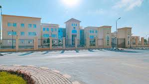
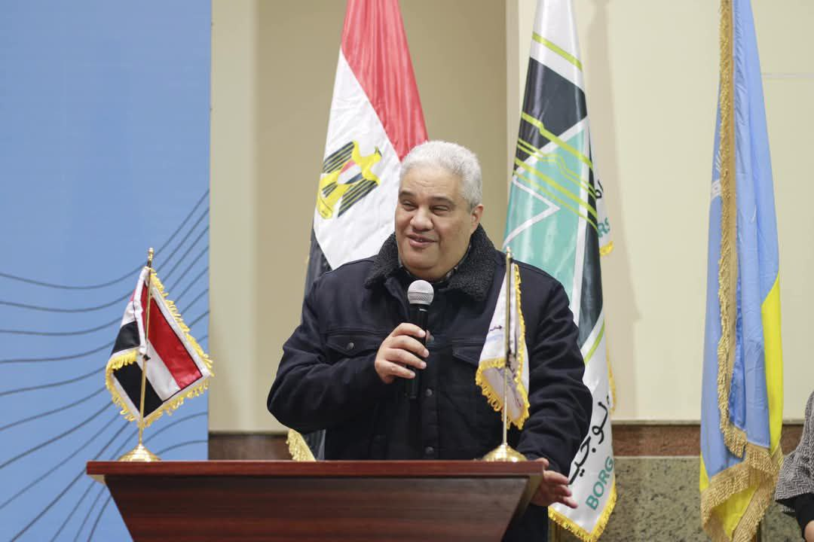

Borg El Arab Technological University (BATU) is one of Egypt's newly
established technological universities, aiming to bridge the gap between
academic education and industrial needs. Located in Borg El Arab,
Alexandria, the university offers specialized programs in applied sciences
and modern technologies to equip students with practical skills for the
job market. BATU collaborates with various industries to provide hands-on
training, fostering innovation and technical expertise. With
state-of-the-art facilities and a focus on research and development, the
university plays a crucial role in supporting Egypt’s technological
advancement and economic growth.

Dr mohamed morsi El-gohary
Dr. Mohamed Morsi El-Gohary is the current president of Borg El Arab
Technological University (BATU). He was appointed to this position by
ministerial decree in October 2022. Before leading the university, Dr.
El-Gohary served as the Head of the Department of Marine Engineering and
Naval Architecture at Alexandria University’s Faculty of Engineering.
Under his leadership, BATU aims to equip students with advanced
technological education that meets the demands of the modern job market.
He has emphasized that Egypt’s technological universities are designed to
bridge the gap between academic education and industry needs, increasing
employment opportunities for graduates. Dr. El-Gohary has also highlighted
that BATU follows the German model of technological education, focusing on
practical and applied training to ensure students gain real-world
experience.

Dr osam El-Nhas
Dr. Osama El-Nahhas is the Head of the Information Technology Department
at the Faculty of Industry and Energy Technology, Borg El Arab
Technological University. He is a key figure in advancing technological
education and plays a vital role in shaping academic programs to equip
students with the skills needed for the modern job market. His
Contributions: Inaugurating the Computer Networks Lab: Dr. El-Nahhas
contributed to establishing a state-of-the-art computer networks lab,
enhancing hands-on learning for students. Technological Child University
Initiative: He actively participated in this initiative, aiming to
introduce young minds to technological advancements. "Digital World"
Initiative: Under his leadership, the university hosted the fifth station
of the "Digital World" initiative, promoting creativity and technological
innovation among students. Dr. Osama El-Nahhas continues to drive digital
transformation and innovation, ensuring that students are well-prepared
for the evolving tech landscape.
Eng Ahmed soltan
Eng. Mohannad Ahmed Al-Sultan is a talented and well-loved teaching
assistant in the Information Technology Department. Known for his
exceptional skills and friendly personality, he plays a crucial role in
supporting students and fostering a positive learning environment. His
dedication to education and technology makes him a respected figure among
both students and colleagues.